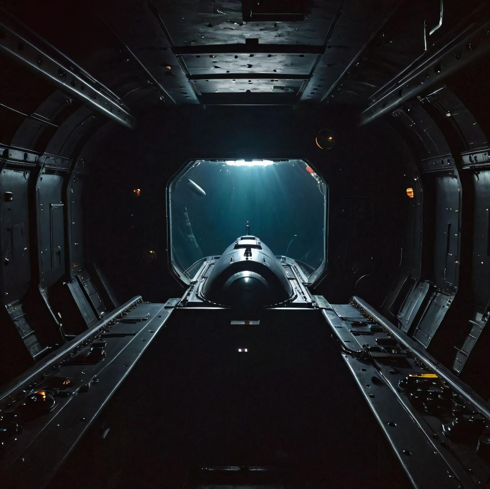
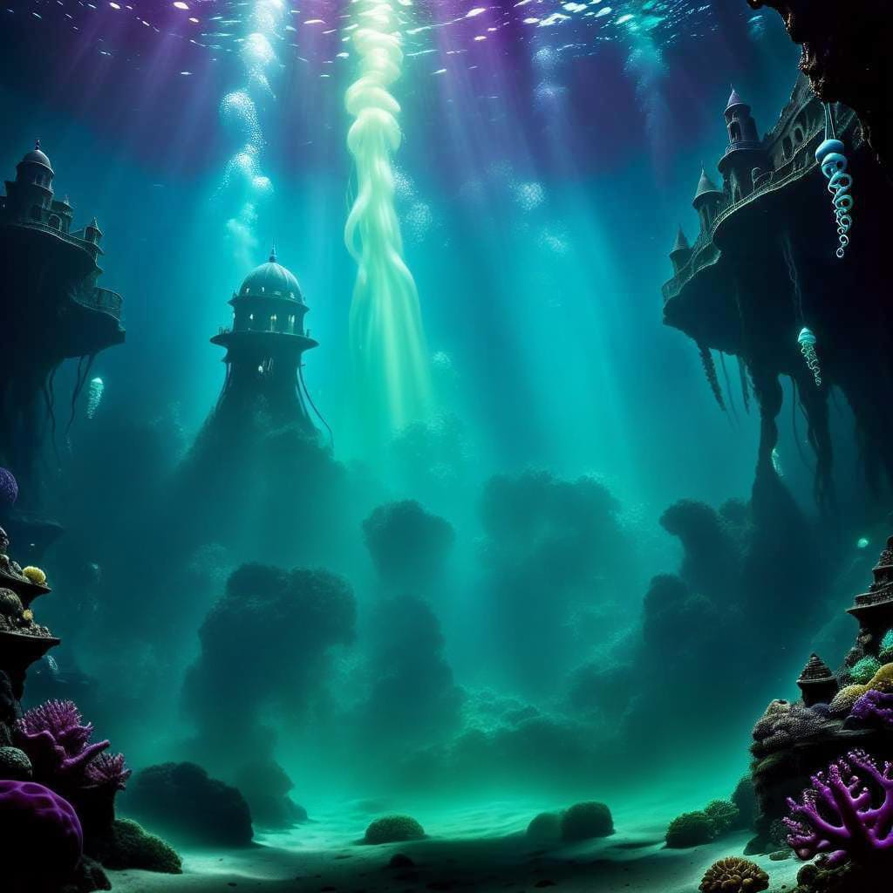

Sublevel 83.5 is a game of squid dodge. If you remember, driving the submarine was impossible in its parent level, as the controls, difering from evrything else, were broken. In fact, you get to this sublevel by not accepting the broken state of those controls and insisting on attemping to drive the parent level's submarine, and might believe you broke it insted of noticing the level change, as the not working state of the majority of lights is the first thing a person can notice upon entering sublevel 83.5, followed by the sudden vanashing of The Crew of the USS Ace of Spades (SSN 744) and, most likely, all humans, as this sublevel is not much visited. Fridges still do everything they did in the parent level and their lamps shine white light into the entityless darkness, but the major light source this sublevel offers are the glass-made walls, as the sky above the water apears to be a brighter version of 1.42's. It "apears" because going up keeps getting harder the further away you alredy are from the oceans bottom, there being a point, before getting actually close to leave the water, where keep going up is impossible. On the other hand, the closer the submarine is from the ocean's bottom, the easyer going away from last is. The chair in the control room is more confortable than the majority of the beds in the Frontrooms, but all other places people would be expected to sit or lie on are surprisingly hard, even scrapy sometimes, reasoning almost everyone to not stay on them for over two or three minutes. It is also smaller, there are less rooms in the interior of the sublevel than in the parent and some of the similar ones have lower area.
This sublevel is more known as "The Squid Avoiding Game", the reason for that is what its visitors do in its control room. Diferently from the parent level, the submarine controls are perfectly working here, and the facts the control room is the only confortable one and the inside of the submarine itself is so devoided of things to do and see tend to lead every visitor to stay in the control room. Almond water bottles and meals are usually taken from the fridge and put on the control room's tables, for the visitor to eat evenly while driving the submarine. This sublevel has been classified as class 3 and given a medium entity count, but the interior of the submarine is devoid of entitys unless one enters the sublevbel via the same way did a human. The dangerous creatures are outside the submarine, swiming trough the infinite ocean, ready to atack it if they detect the moving structure. What a visitor of this place is spending the majority of their time doing, and they have to do so unless they are okay with a gigant ocean creature troughwing away they viecle and making everything spin and shake violently, is driving away from the from-abyss looking creatures and eventual rock formations that stick out of the ocean's bottom. There will be times of peace, when there is nothing out in water trying to atack the submarine, during wich a visitor can walk around its interior, but, for the majority of time being, you will be driving, avoiding great squids and fishs, and exploring this infinite ocean.
The ocean itself is actually beautyfull: there are corals, some small fish there are bioluminessent and neon, fresh looking water, it, overall, tends to trigger relaxing vibe in the visitors while they are driving their submarine trough it. Some can also get an adventurus felling while dodging the colossals, wich might lead to dath if they overestimate their own abilitys, making it important to warn for never attemp to fight the ocean colossals or any stuped idea of that kind, but it is still a considerably fun thing to do and a way to have adrenaline surges.
